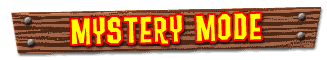
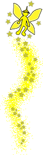

|  |
|  |
Do you believe in Banana Fairies? Well, you better start believing in them because they can help you open up some magical Mystery Modes. All you have to do is start collecting photos of Banana Fairies and you will get access to some cool bonus features: Find two Banana Fairies to open the DK THEATER—You can listen to the rap or go to the DK cinema Find six Banana Fairies to open the DK BONUS—You can play some bonus minigames in the Rambi Arena and the Enguarde Arena Find ten Banana Fairies to open BOSSES—You can battle the huge bosses K. Rool sends after you over and over again. Find fifteen Banana Fairies to open KRUSHA BATTLE—You can control the ill-tempered Krusha in Battle Mode Find twenty Banana Fairies to open CHEATS—You can access the DK cheat menu and then really have some fun |